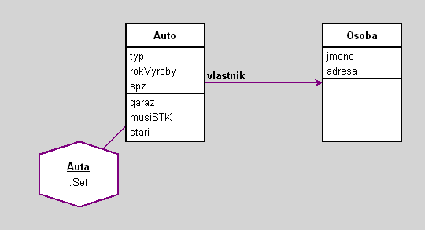

Auta
author(s): Vojta
Priklad na konferenci Informatika 2007
Workspace
Auta select: [:a | a rokVyroby < 2000]
Auta select: [:a | a stari > 5]
Auta select: [:a | a musiSTK]
(Auta select: [:a | a musiSTK]) collect: [:a | a vlastnik]
Auta project: #typ with: #spz with: #stari
Workspace Objects
Script
"Note that variables begining with uppercase letter will be moved into the workspace pool."
o1 := Osoba new.
o1 jmeno: 'Petr'.
o1 adresa: 'Praha'.
o2 := Osoba new.
o2 jmeno: 'Pavel'.
o2 adresa: 'Brno'.
Auta := Set new.
a1 := Auto new.
a1 typ: 'Ford'.
a1 rokVyroby: 2000.
a1 spz: '1A2 98 98'.
a1 vlastnik: o1.
a2 := Auto new.
a2 typ: 'Mazda'.
a2 rokVyroby: 1997.
a2 spz: '3U2 11 34'.
a2 vlastnik: o1.
a3 := Auto new.
a3 typ: 'Opel'.
a3 rokVyroby: 2005.
a3 spz: '4S1 99 77'.
a3 vlastnik: o2.
Auta add: a1; add: a2; add: a3.
Diagram

Classes
Auto
|
instance variables
rokVyroby :Number
spz :String
typ :String
vlastnik :Object
|
methods
garaz
initialize
musiSTK
rokVyroby
rokVyroby:
spz
spz:
stari
typ
typ:
vlastnik
vlastnik:
|
|
Toto je trida, ktera implementuje objekty typu Auto
|
code of non-accessing methods:
Osoba
|
instance variables
adresa :String
jmeno :String
|
methods
adresa
adresa:
initialize
jmeno
jmeno:
|
|
Toto je trida, ktera implementuje objekty typu Osoba
|
code of non-accessing methods:
Links
Data file and
class source.
Generated by Daskalos - Object Modeling Tutor (C) 2006 V. Merunka
May 7, 2007